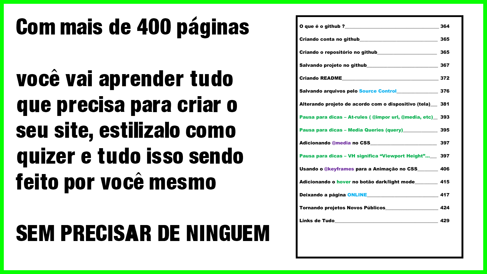
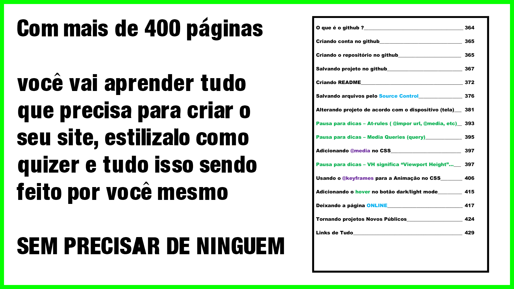

QUEM TEM MAIS DIREITO SOBRE O CANAL DO PANAMÁ?
O mundo que conhecemos hoje está repleto de obras magnificas da engenharia moderna, mas muitas delas nem se comparam ao gigantesco e engenhoso canal do Panamá.
A DISPUTA PELO CANAL DO PANAMÁ
Construído a mais de 100 anos, o canal do Panamá é uma importante construção estratégica que está sendo alvo de polemicas disputas políticas entre os Estados Unidos, o Panamá a Colômbia e também a China, mas quem você acha que tem mais direito sobre ele, bom, se você continuar lendo, você vai descobrir :D
BEM VINDOS
Olá pessoal, sejam muito bem-vindos a mais uma matéria do E.S.blog, e na matéria de hoje nos vamos entender porque o canal do panamá esta sendo disputado por esses paises e qual país tem mais direito sobre ele, então se aconchega no seu canto favorito de leitura e vamos alimentar o nosso conhecimento.
INTRODUÇÃO
O Canal do Panamá é uma das obras de engenharia mais impressionantes do mundo, ele conecta o Oceano Atlântico ao Oceano Pacífico através do istmo do Panamá, o canal tem cerca de 82 km de extensão, e entre 12 e 26 metros de profundidade, ele também conta com seis conjuntos de eclusas que podem elevar navios a impressionantes 26 metros acima do nível do mar. O sistema de eclusas é essencial para o canal, permitindo que os navios atravessem a região montanhosa do Panamá sem a necessidade de um túnel, o que facilitou bastante sua construção e o transporte entre os oceanos.
 



A CONSTRUÇÃO DO CANAL DO PANAMÁ
A construção do canal do panamá foi bastante longa, complexa e envolveu
grandes desafios técnicos, políticos e humanos, e essa ideia já havia
sido pensada a muuuuuito tempo. A ideia de um canal na América Central
existe desde o século XVI (16), quando os espanhóis buscavam uma rota
mais curta entre os oceanos. No entanto, o primeiro grande projeto só
começou em 1881, liderado pelos franceses sob o comando de Ferdinand de
Lesseps, o mesmo engenheiro responsável pelo Canal de Suez.
A PARTICIPAÇÃO FRANCESA NA CONSTRUÇÃO
Após os franceses assinarem o tratado Salgar-Wyse com a colômbia, antiga
dona das terras, que na época era chamada de republica de nova granada,
os franceses ganharam o direito de construir e explorar o canal por 99
anos, com o canal ainda pertencendo formalmente a colômbia. Em troca, a
empresa francesa pagaria uma taxa à Colômbia pelo uso da terra e dos
direitos de operação. O projeto francês financiado por investidos
privados levantou cerca de 1,2 bilhões de francos e continuou por oito
anos (1881 a 1889). A construção, no entanto, foi um desastre devido a
vários problemas como doenças tropicais como malária e febre amarela,
deslizamentos de terra, falhas no projeto e outro problema muito
conhecido pelos brasileiros, a corrupção. Neste projeto, a corrupção foi
tão grande que até hoje esse escândalo é conhecido pelos franceses como
o Escândalo do Panamá, um dos maiores escândalos financeiros da França
no século XIX (19). Então, após a morte de milhares de trabalhadores e
problemas financeiros o empreendimento francês faliu em 1889.


OS CONFRONTOS NA COLÔMBIA
Nesta época a colômbia já estava passando por problemas com aquela região, em vários momentos a população da região tentou se declarar independente e se separar da colômbia através de movimentos separatistas panamenhos, mas todas as tentativas foram sem sucesso até que algo diferente aconteceu.
A INTERVENÇÃO AMERICANA NA COLÔMBIA
A falida empresa francesa vendeu para os Estados Unidos os ativos do
Canal por 40 milhões de dólares. Então, em 1903, de posse dos ativos do
canal, os Estados Unidos tentaram negociar um tratado com a Colômbia
para construir um canal através do istmo, mas o Senado colombiano
rejeitou o acordo, alegando que os termos eram injustos. Isso irritou os
americanos, que passaram a apoiar o movimento separatista panamenho. O
governo dos Estados Unidos, sob o presidente Theodore Roosevelt, começou
a negociar secretamente com líderes separatistas panamenhos e em 3 de
novembro de 1903 os rebeldes panamenhos declararam independência. Os
Estados Unidos ajudaram, enviando navios de guerra e fuzileiros para
impedir que a Colômbia reprimisse o levante. O exército colombiano
tentou enviar tropas para retomar o Panamá, mas os navios de guerra dos
Estados Unidos bloquearam a costa. Sem poder reagir, a Colômbia aceitou
a separação. A Colômbia ficou enfraquecida politicamente e só recebeu
uma compensação financeira dos EUA 21 anos depois através do tratado
Thomson-Urrutia mas ainda hoje existem colombianos que consideram que a
separação do panamá foi um golpe apoiado pelos americanos. O Panamá se
tornou um país independente e logo assinou o Tratado Hay-Bunau-Varilla
com os Estados Unidos, concedendo-lhes o direito de construir e
controlar o Canal do Panamá.
OS AMERICANOS ASSUMIRAM O PROJETO
Os Estados Unidos assumiram o projeto em 1904, financiado pelo próprio governo e já de posse dos ativos da falida empresa francesa, os Estados Unidos começar sua empreitada. Com o acordo, os Estados Unidos pagaram 10 milhões de dólares ao Panamá pelo controle da Zona do Canal, além de um pagamento anual de 250.000 mil dólares ajustado ao longo dos anos. A construção foi concluída em 1914, levando 10 anos sob a liderança do engenheiro George Washington Goethals e custou cerca de 375 milhões de dólares no total.
O PROJETO AMERICANO
Durante sua construção, os engenheiros americanos foram bem mais inteligentes que os franceses, ao invés de cavarem um canal para chegar ao nível do mar semelhante ao Canal de Suez, eles adotaram um sistema de eclusas, e ao represar o Rio Chagres eles criaram a represa de gatún, o maior lago artificial do mundo na época. O Lago Gatún passou a funcionar como um elevador natural, fornecendo água doce para as eclusas e permitindo que os navios fossem elevados a 26 metros acima do nível do mar, algo que facilitou e muito a obra, permitindo que os navios chegassem ao nível desejado sem a necessidade de muita escavação. Desde então o canal do Panamá é essencial para o comércio marítimo mundial, reduzindo o tempo e os custos de transporte entre os oceanos.
COMO ERA ANTES DO CANAL
Antes dele, os navios precisavam contornar a América do Sul pelo Estreito de Magalhães ou pelo Cabo Horn, uma viagem muito mais longa e perigosa, sua construção fez com que as viagens ficassem muito mais curtas e seguras permitindo que muitas vidas fossem polpadas, mas o canal do panamá também cobrou seu preço para ser construído.
OS EUA ABREM MÃO DO CANAL
Desde o início, estima-se que cerca de 25.000 pessoas morreram durante as duas fases a francesa e a americana da construção, principalmente devido a doenças tropicais e acidentes de trabalho. Desde sua conclusão, o canal ficou sob controle dos Estados Unidos, o que gerou tensões no Panamá. Durante décadas, os panamenhos reivindicaram a soberania sobre a infraestrutura. Então em 1977, o presidente americano Jimmy Carter assinou um tratado com o líder panamenho Omar Torrijos, estabelecendo que o canal seria devolvido gradualmente ao Panamá até 1999, o que de fato ocorreu.
A AUTONOMIA DO CANAL DO PANAMÁ
Desde então, o canal tem sido administrado pela Autoridade do Canal do Panamá (ACP) e passou por uma grande expansão em 2016 para permitir a passagem de navios maiores. Hoje, o canal continua sendo um dos pontos estratégicos mais importantes do mundo, movimentando bilhões de dólares em comércio global. Mas apesar de pertencer ao panamá e ser administrado pela ACP, o local sofre com muitas tentativas de influência externa.
A CRESCENTE INFLUENCIA CHINESA NO CANAL
Os Estados Unidos é o maior usuário do canal do panamá hoje e em segundo lugar vem a china onde grande parte da sua exportação e importação para as américas passa pelo canal. Ao longo dos anos a china vem cercando o canal do panamá através da área comercial. Atualmente empresas chinesas têm investido em portos, ferrovias e projetos logísticos no Panamá. O grupo chinês Landbridge administra o porto de Margarita Island na bahia limón, próximo ao canal. Em 2016 empresas chinesas tentaram participar de projetos de expansão do canal, mas enfrentaram resistência do governo panamenho. Em contra partida, em 2017, o Panamá rompeu relações diplomáticas com Taiwan e passou a reconhecer oficialmente a China como parceiro diplomático e comercial, fortalecendo laços econômicos.
OS EUA ESTÃO DE OLHO
Atualmente, o canal é administrado exclusivamente pelo Panamá através da ACP. No entanto, o aumento da presença econômica chinesa pode influenciar decisões estratégicas do país no longo prazo. Os EUA, que tradicionalmente veem o canal como uma área de interesse estratégico, monitoram de perto essa influência chinesa para evitar qualquer controle indireto sobre a rota marítima. De acordo com os acordos firmados entre os Estados Unidos e o Panamá em 1977, está determinado que o canal será permanentemente neutro, mas que os Estados Unidos se reservam o direito de defender qualquer ameaça à neutralidade do canal, podendo utilizar até mesmo força militar.
CONSIDERAÇÕES FINAIS
Mas iai, quem você acha que está certo nesta história, os Estados Unidos que construíram e pagaram pelo canal, a colômbia que perdeu parte do seu país, o panamá que é dono do território onde o canal foi construído ou a china que ao longo dos anos vem tomando conta financeiramente de várias partes do mundo? se quiser comentar, é só tocar no link do video que está aparecendo aqui em baixo, muito obrigado a todos e até a próxima pessoal, valeu.